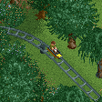

Rejected Custom Rides

Alpine Coaster
Description: A quick and dirty alpine coaster
Notes: Not a recreation of any real ride
DownloadGeneric Coaster Train
Description: A train based on a model sent to me by geewhzz and converted by posix
Notes: Not a recreation of any real ride
Download
Scenic Railway
Description: Wooden cars with benches take guests through gentle dips and past scenic backdrops
Notes: The only reason this was never posted on the main page is that it suffers very severe glitches - so much so that it won't be acceptable to most
Download